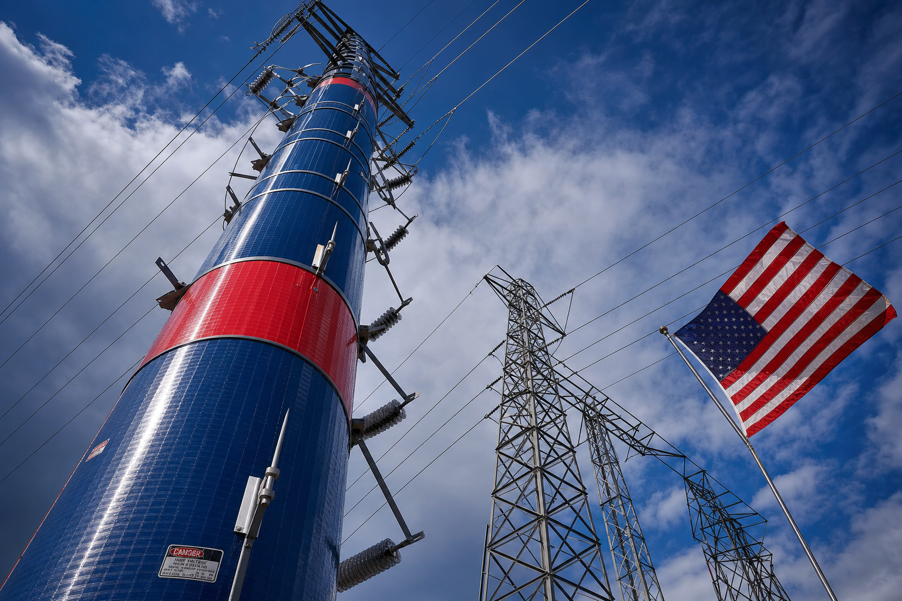
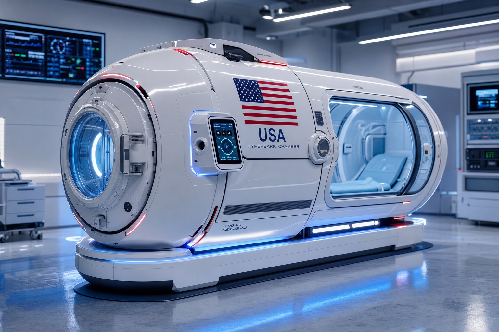
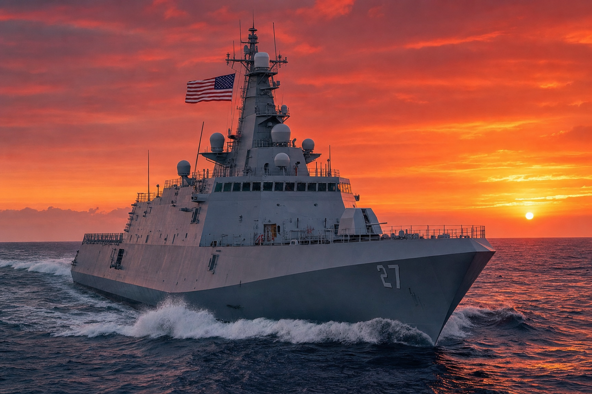
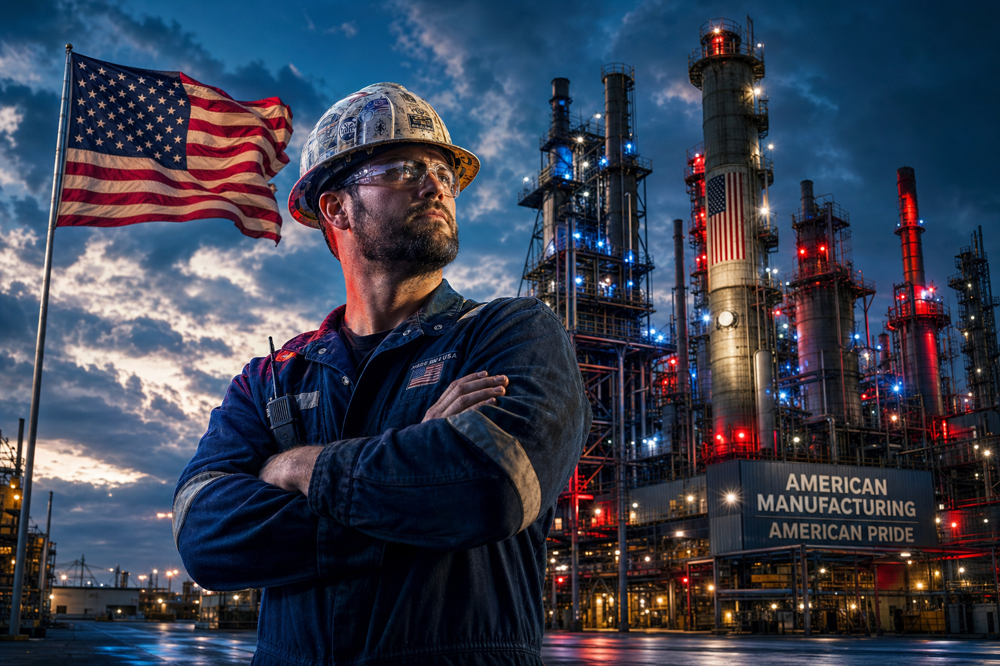

What We Build
THEIS CONSTRUCTION
Structural polymer composite coatings, overlays, and surface systems for commercial, industrial, and landmark construction projects. Theis Construction has built or coated some of America's most iconic structures, from California's landmark estates to historic architectural treasures. A trusted name in construction composites since the 1950s.
- ✅ Structural coatings for concrete, steel, and masonry
- 🏆 Landmark project track record since the 1950s — Hearst Castle, Griffith Park Observatory, Wrigley Mansion on Catalina Island, Frank Lloyd Wright historic home
- ⚡ Fast-cure TT7200 formulation minimizes project downtime

TEKTON POLE & PIPE
Composite pole wrap systems that restore and protect utility poles, transmission towers, and pipeline infrastructure. Extends service life by decades at a fraction of the cost of full replacement. A proven solution for utilities, municipalities, and infrastructure operators managing aging assets.
- ✅ Steel and wood pole composite wrapping and restoration
- 🔌 Compatible with all major utility pole diameters and configurations
- 🇺🇸 DOT-compliant application process — see TektonPole.com
XTT CONTAINMENT
Advanced composite containment liners for above-ground storage tanks, transport containers, and hazardous material vessels. XTT Containment is currently undergoing compliance testing with DOT, PHMSA, and FAA to certify composite liner systems for the most demanding containment environments in America.
- ✅ Secondary containment lining systems for storage and transport vessels
- 🛢️ Compatible with petroleum, chemical, and biological materials
- 📋 DOT / PHMSA / FAA certification pathway in progress
ALVIZ DEFENSE
Military-grade composite armor systems for vehicles, structures, and personnel protection. Alviz Defense produces advanced polymer composite panels engineered to NIJ and military vehicle protection standards — delivering ballistic performance in a lighter, more field-applicable form factor than legacy steel solutions.
- ✅ Vehicle armor composite panels for military and protective applications
- 🛡️ Ballistic-rated formulation series — NIJ and vehicle protection standards
- 🇺🇸 ITAR-compliant domestic production — 100% American made

THEIS HYPERBARIC
Composite-constructed hyperbaric chambers for medical, wellness, and military applications. Theis Hyperbaric units leverage the TT7200 structural composite system to produce chambers that are significantly lighter than traditional steel construction and stronger than fiberglass alternatives — currently advancing through ASME and FDA 510k pathways.
- ✅ Composite-body hyperbaric chambers for medical, wellness, and military use
- 🏥 ASME standards compliance and FDA 510k medical device pathway in progress
- 💪 Lighter than steel, stronger than fiberglass — engineered with TT7200
HYDROCARBON & ENERGY
Patent-protected composite coating systems for oil and gas pipelines, refineries, and hydrocarbon processing facilities. Reduces corrosion failure rates, dramatically extends asset service life, and cuts ongoing maintenance costs — backed by a proprietary formulation portfolio that delivers measurable, documented performance.
- ✅ Pipeline internal and external composite coating systems
- ⚡ Dramatically reduces corrosion failure rates across hydrocarbon infrastructure
- 🔒 Patent-backed formulation portfolio — licensed through HP Miller LLC

THEIS MARITIME
Marine-grade composite coatings for ship hulls, dock infrastructure, offshore platforms, and naval vessels. Salt-resistant, anti-biofouling formulations engineered for the harshest marine environments — from commercial shipping fleets to U.S. naval installations and offshore energy infrastructure.
- ✅ Hull coating and structural marine composite systems
- 🚢 Naval and commercial fleet applications — salt-resistant, anti-biofouling
- 🌊 Anti-corrosion formulation series for offshore and dock infrastructure
RAIL & INFRASTRUCTURE
Composite wrap and overlay systems for rail infrastructure, bridges, tunnels, and civil engineering structures. Theis Rail & Infrastructure solutions have proven performance on active rail and transit systems — extending asset life and reducing maintenance burden for operators managing legacy infrastructure.
- ✅ Bridge and rail structural composite wraps for active infrastructure
- 🚂 Active rail system applications — proven track record
- 🏗️ Compatible with steel, concrete, and timber civil structures
ABSORBTEC ENVIRONMENTAL
Environmental spill containment and barrier systems with a proven deployment record at the Port of Los Angeles — one of the busiest and most regulated ports in the world. Absorbtec provides rapid-deploy composite barriers for petroleum, chemical, and industrial spill response events where speed and reliability are critical.
- ✅ Rapid-deploy spill containment barriers for industrial and port environments
- 🌊 Proven at the Port of Los Angeles — real-world, high-stakes performance
- 📋 EPA-compliant materials and application processes

PROTEC TIRE SEALANT
Commercial-grade tire sealant system engineered for fleet operators who cannot afford downtime. Protec prevents puncture-related failures across trucking, mining, agricultural, and municipal fleet applications — reducing blowout risk, extending tire service life, and cutting total fleet operating costs.
- ✅ Puncture-prevention tire sealant for commercial fleets
- 🚛 Compatible with commercial, OTR, and agricultural tire formats
- 💰 Reduces fleet downtime and blowout replacement costs significantly
WIND POWER ENERGY
Composite blade coating and structural repair systems for wind turbine applications. Working prototype validated. Theis Wind Power systems extend blade service life and restore structural integrity without full blade replacement — reducing the single largest maintenance cost for wind energy operators at scale.
- ✅ Wind blade leading-edge protection coatings
- 💨 Structural repair and restoration without full blade replacement
- 🔬 Prototype validated — scaling and commercialization underway

INNOVATION FOUNDRY
The R&D engine of Theis Manufacturing. The Innovation Foundry develops custom composite formulations for new applications, client-specific requirements, and emerging industry verticals — operating as the platform through which the Theis system evolves into every new market where composite technology can create value.
- ✅ Custom formulation development for any composite application
- 🔬 Client-specific R&D partnerships and co-development programs
- 🚀 Proprietary IP developed and licensed through HP Miller LLC